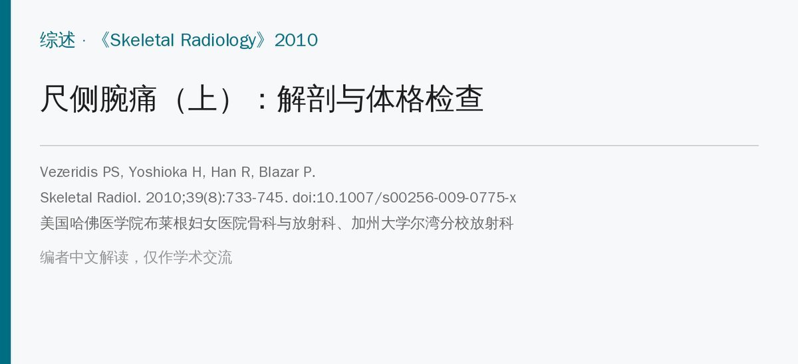
🔖原文信息（编者中文重排）
📚 文献信息
▪ Vezeridis PS, Yoshioka H, Han R, Blazar P. Ulnar-sided wrist pain. Part I: anatomy and physical examination. Skeletal Radiology. 2010;39(8):733-745. doi:10.1007/s00256-009-0775-x
▪ 作者单位：美国哈佛医学院布莱根妇女医院骨科与放射科、加州大学尔湾分校放射科
▪ 文章类型：叙述性综述（上篇讲解剖与查体，下篇讲影像）
尺侧腕痛很常见，但结构小而复杂，影像表现又常常不明显，手外科和放射科都觉得难。熟悉解剖＋系统查体，是找到病因的前提。
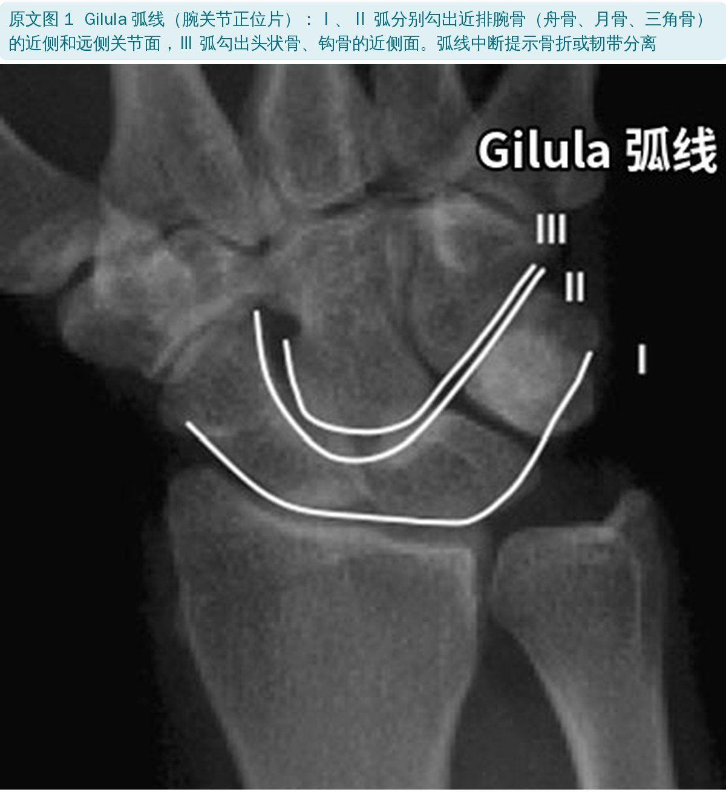
🔖原文图 1：Gilula 弧线
• 尺骨远端有尺骨头（与桡骨形成下尺桡关节）和尺骨茎突（尺侧副韧带起点）；两者之间的浅凹（小凹）是三角纤维软骨的附着处
• 尺骨变异：尺骨与桡骨远端关节面的长度差。正变异与 TFCC 撕裂、尺腕撞击综合征关系密切（TFCC、月骨、三角骨、尺骨头软骨退变）；负变异与月骨缺血坏死（Kienböck 病）的关系仍有争议
• 月骨是腕部最常脱位、第二常骨折的骨；三角骨与钩骨形成“螺旋状”关节；豌豆骨在尺侧腕屈肌腱内，豌豆三角关节有 12%～25% 不与桡腕关节相通
• 下尺桡关节：从旋前到旋后，尺骨头相对桡骨转约 150°，靠掌、背侧桡尺韧带和 TFCC 稳定；真侧位片上桡尺骨应重叠，不重叠提示下尺桡关节损伤
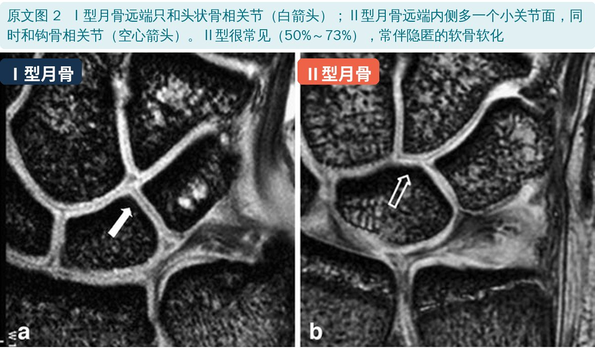
🔖原文图 2：Ⅰ型和Ⅱ型月骨
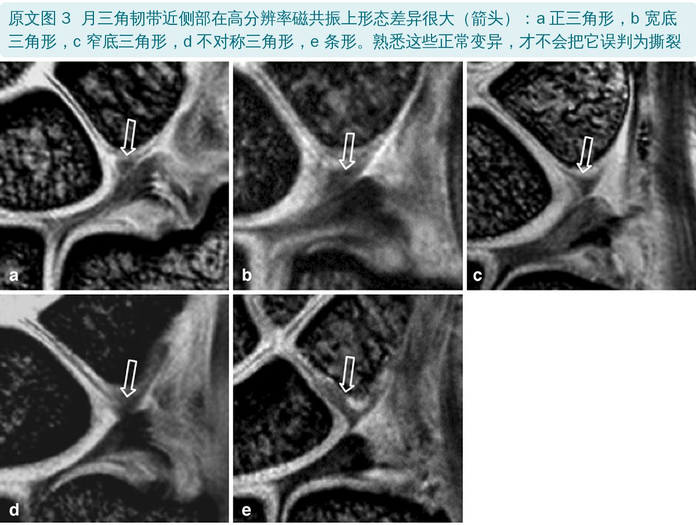
🔖原文图 3：月三角韧带近侧部的正常变异
• U 形，分背侧、近侧、掌侧三部分：背侧部限制旋转，掌侧部最厚最强，近侧部是薄的纤维软骨
• 月三角韧带撕裂时 X 线常正常；关节造影也可能把年龄相关的穿孔误当撕裂
• 近侧部在磁共振上 >85% 呈三角形，约 2/3 的人有线状中高信号——不熟悉正常变异容易误判为撕裂
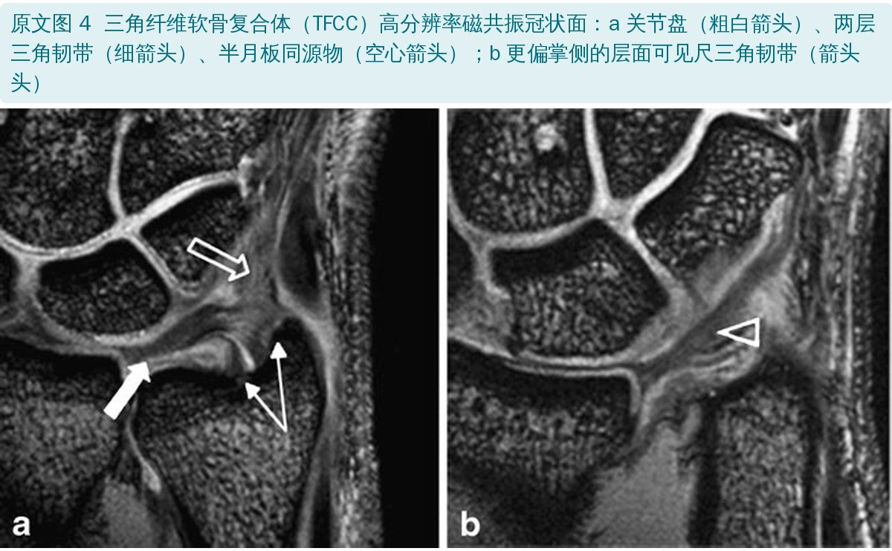
🔖原文图 4：TFCC 的磁共振表现
• 组成：关节盘、半月板同源物、尺月韧带、尺三角韧带、掌背侧桡尺韧带、尺侧副韧带等；作用是稳定下尺桡关节、在腕骨和尺骨之间传递轴向负荷
• 大部分有两个尺骨附着点：茎突尖（远层）和小凹（近层）
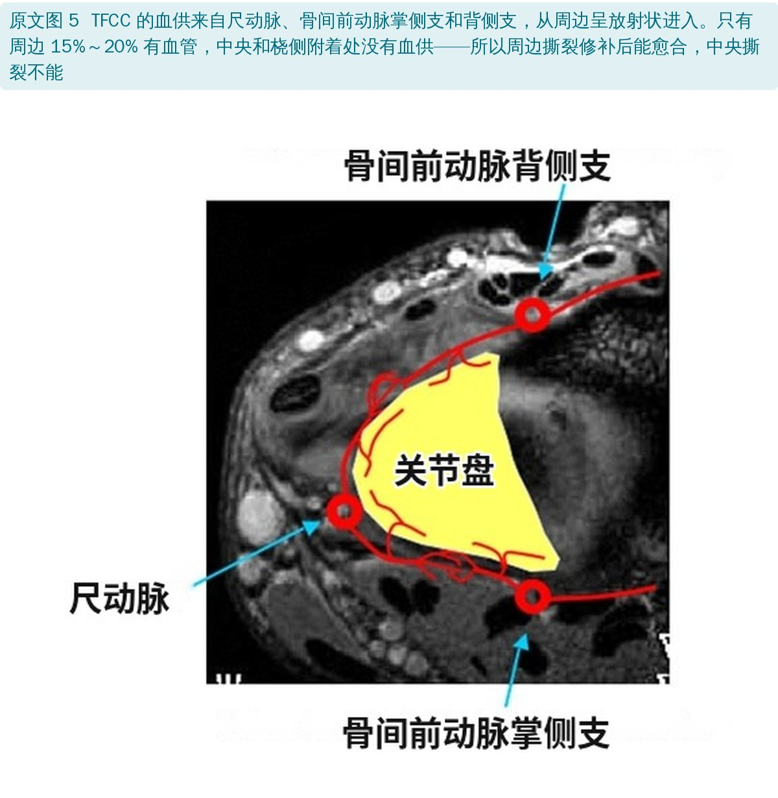
🔖原文图 5：TFCC 的血供
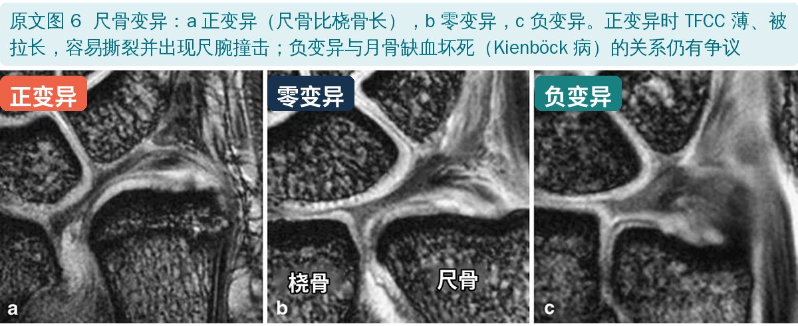
🔖原文图 6：尺骨正变异、零变异、负变异
高分辨率磁共振显示：尺骨变异平均 +0.26 mm；尺骨变异越大，TFCC 角度越大（r＝0.84）、TFCC 越薄（r＝−0.71）。薄的 TFCC 更不耐受应力。
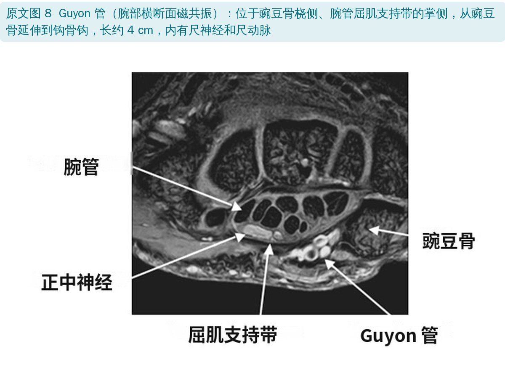
🔖原文图 8：Guyon 管
• Guyon 管在中段把尺神经、尺动脉分为深、浅支；出管后浅支尺动脉紧贴钩骨钩，没有保护，容易受伤
• 尺侧腕伸肌腱在第 6 背侧间室、尺骨背外侧沟内，止于第 5 掌骨；尺侧腕屈肌腱止于豌豆骨
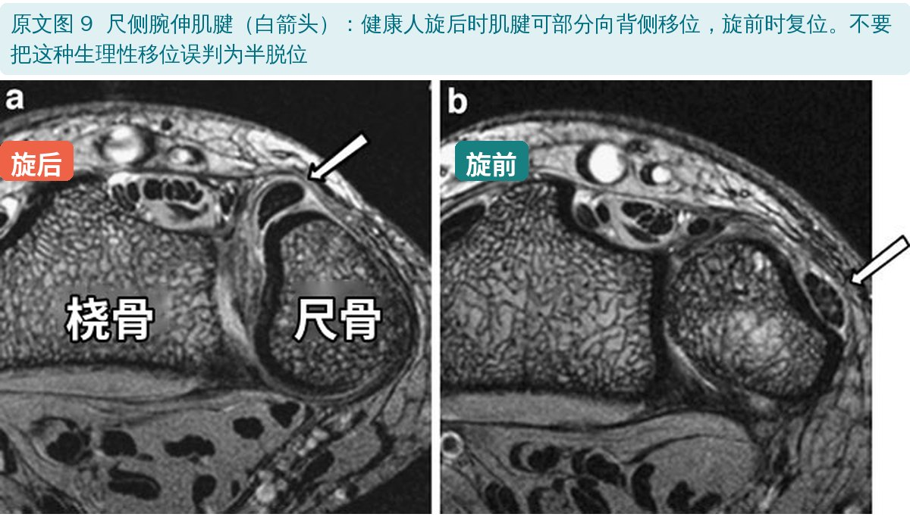
🔖原文图 9：尺侧腕伸肌腱随旋前旋后移动
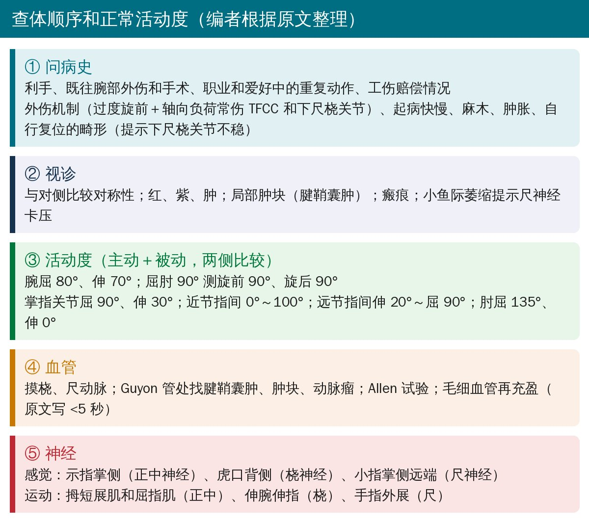
🔖查体顺序和正常活动度（编者根据原文整理）
• Allen 试验：让患者反复用力握拳驱血，紧握时检查者同时压住桡、尺动脉；患者张手后松开其中一条，观察手掌是否迅速转红；再换另一条
• 测腕屈伸肌力时让患者握拳，避免屈指肌代偿屈腕
• 尺骨和下尺桡关节：急性损伤时压痛、旋转受限；背侧脱位可见腕背隆起，前臂卡在旋前位
• 月骨：压痛伴活动度下降，要想到 Kienböck 病
• 三角骨：腕桡偏时在尺骨茎突远侧摸到；月三角间隙：屈腕 30°，在第 4、5 背侧间室之间、下尺桡关节远侧一横指处
• 豌豆骨：沿尺侧腕屈肌腱向远摸，在腕横纹处；球拍运动的屈腕和直接压迫会加重豌豆三角关节炎
• 钩骨钩：从豌豆骨向第 2 掌骨头连线，距豌豆骨约 2 cm 处
• 尺侧腕伸肌腱：查有无越过尺骨茎突的半脱位（外伤后旋前时可能听到“啪”一声）；TFCC：摸豌豆骨、尺侧腕屈肌腱和尺骨茎突之间的凹陷
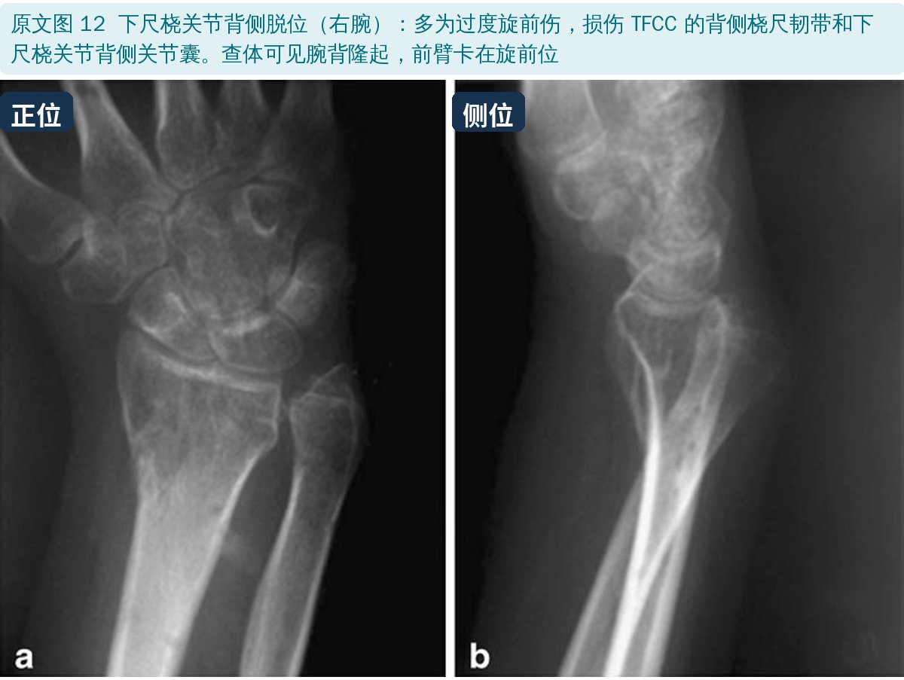
🔖原文图 12：下尺桡关节背侧脱位
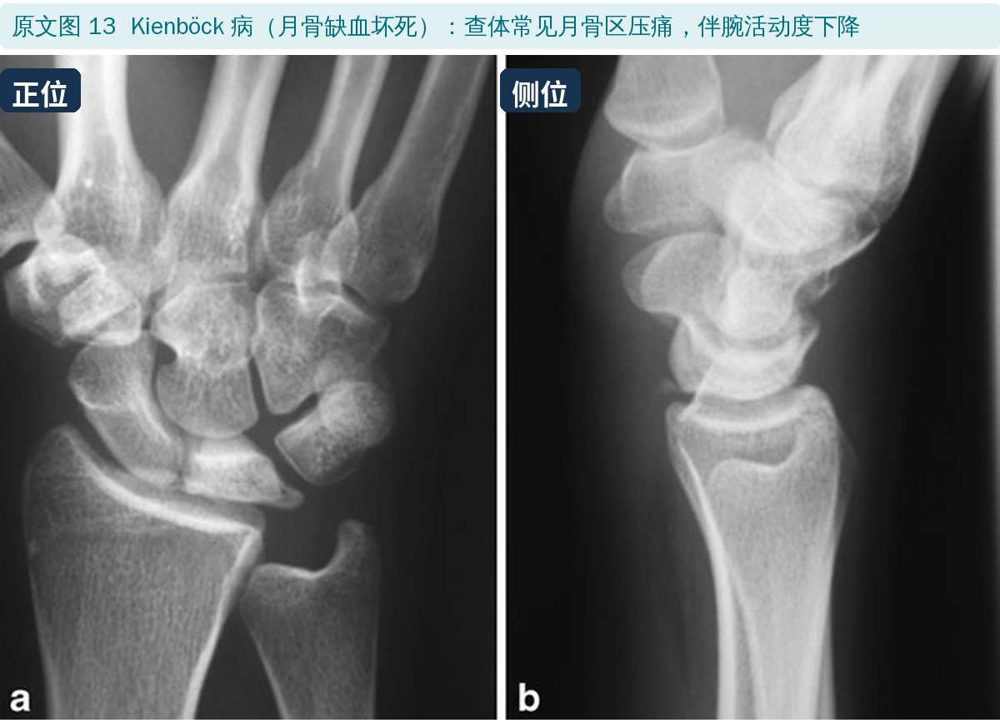
🔖原文图 13：Kienböck 病
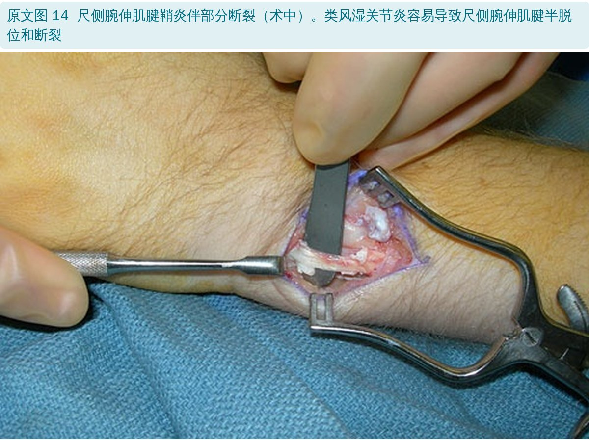
🔖原文图 14：尺侧腕伸肌腱鞘炎伴部分断裂
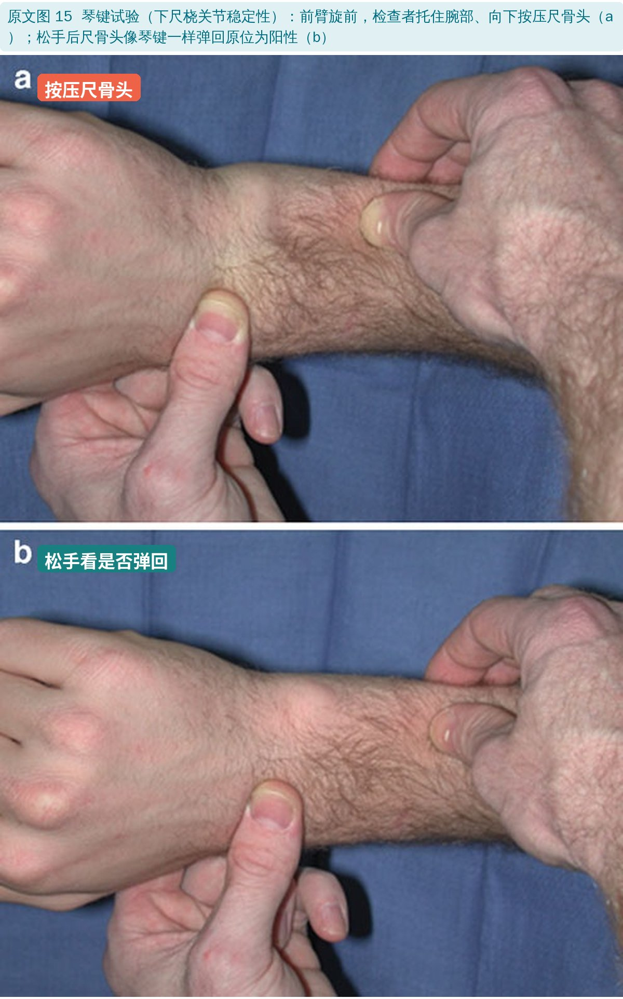
🔖原文图 15：琴键试验
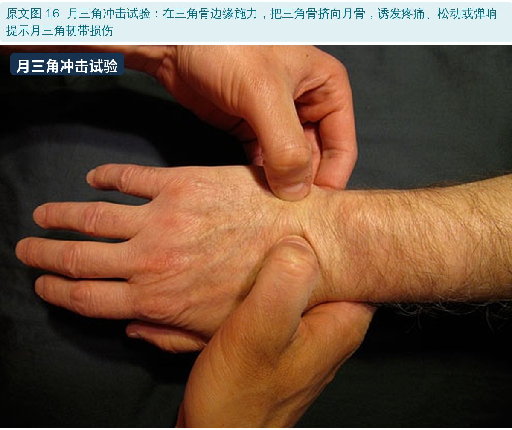
🔖原文图 16：月三角冲击试验
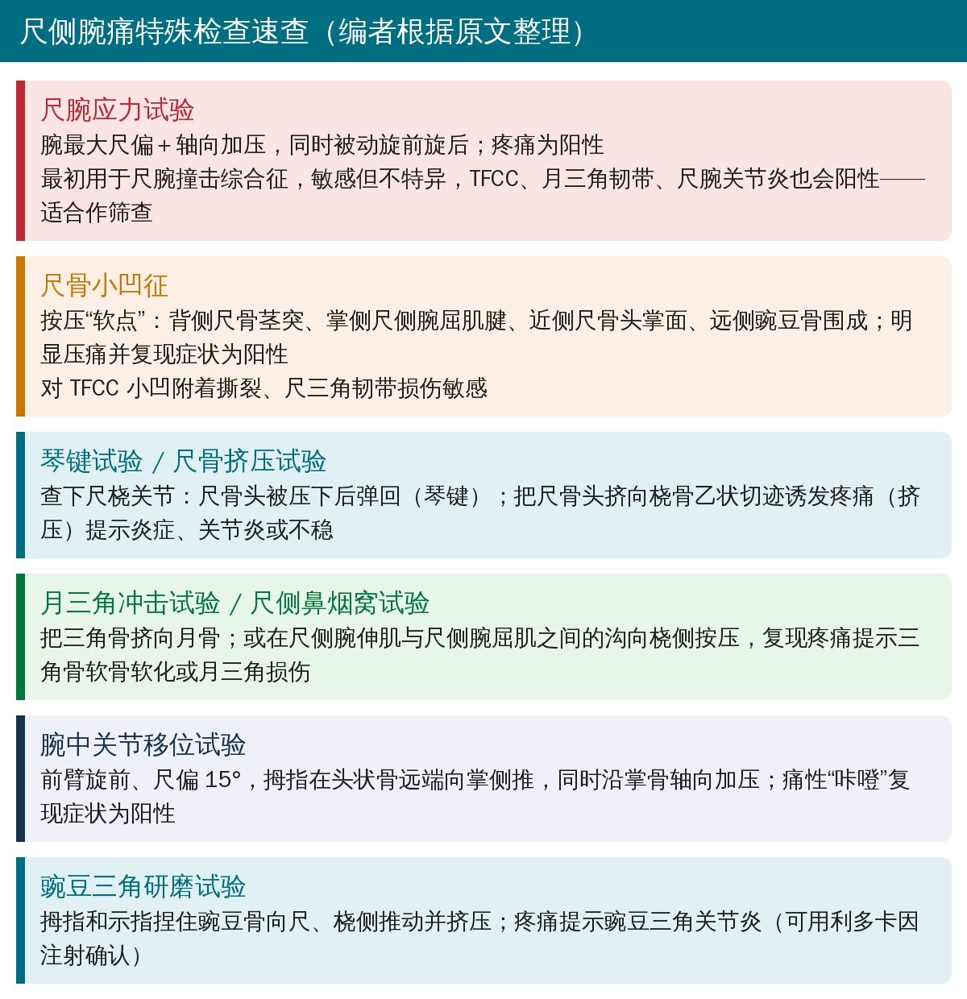
🔖特殊检查速查（编者根据原文整理）
• 叙述性综述：没有给出各检查的敏感度、特异度，只说“敏感”“有用”
• 作者之一是放射科医生，解剖部分偏重磁共振表现，部分结论来自作者团队自己的研究
• 优点：解剖讲得系统，触诊定位和特殊检查描述清楚，适合作查体参考
• “Ⅱ型”指的不同：前文说月骨远端多一个与钩骨相关节的小面叫“Ⅱ型月骨”（发生率 50%～73%），后文又说三角钩关节与头月关节被钩月小面分开的情况占 20%、也叫“Ⅱ型月骨”，两个比例对不上
• 神经分布写错：说桡神经支配拇、示、环指背侧到远节指间关节，应为拇、示、中指和环指桡侧半；又说尺神经支配“腕、手、环小指的背侧和桡侧面”，应为尺侧
• 毛细血管再充盈：原文写正常 <5 秒，通常标准是 <2 秒
• 尺侧腕伸肌腱：解剖部分写它在尺骨“背外侧”沟内，应为背内侧（尺侧）
• Guyon 管：一处写豌豆骨在“尺侧”、钩骨钩在“桡侧”，图 8 图注却写“Guyon 管位于豌豆骨桡侧”，表述角度不同容易混淆
• 按解剖分区想病因：尺骨头 / 下尺桡关节、TFCC、月三角、豌豆三角、钩骨钩、尺侧腕伸肌腱、Guyon 管
• 先触诊定位最痛点，再选特殊检查：尺骨小凹征查 TFCC 小凹附着，琴键试验查下尺桡关节，冲击试验查月三角
• 尺腕应力试验阳性不代表就是尺腕撞击，只能说明有关节内问题
• 所有检查与对侧比较；影像（尤其高分辨率磁共振）看正常变异时要谨慎
欢迎关注骨科康复小黄公众号，获取更多物理治疗的专业知识！
📄参考文献：
Vezeridis PS, Yoshioka H, Han R, Blazar P. Ulnar-sided wrist pain. Part I: anatomy and physical examination. Skeletal Radiol. 2010;39(8):733-745. doi:10.1007/s00256-009-0775-x
原文以知识共享署名-非商业性使用（CC BY-NC）协议开放获取，版权归原作者所有。本文为非商业的学术交流中文解读：原文图 1～6、8、9、12～16 引自原文，图中中文标签为编者所加；查体卡和速查卡为编者整理。原文图 10、11 为经许可转载自其他出版物的图片，本文未使用。仅供学习交流，如有侵权请联系删除。